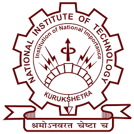

National Institute of Technology, Kurukshetra
(Institute of National Importance)
Thanesar, Kurukshetra(Haryana) 136119, India
National Institute of Technology, Kurukshetra
Thanesar, Kurukshetra(Haryana) 136119, India
About NIT, Kurukshetra
Director's Message
This is Notification 1 regarding this,
This is Notification 2 regarding this,
This is Notification 3 regarding this,
This is Notification 4 regarding this,
This is Notification 5 regarding this,
This is Notification 6 regarding this,
This is Notification 7 regarding this,
This is Notification 8 regarding this,
This is Notification 9 regarding this,
This is Notification 10 regarding this,
'Siemens Centre of Excellence' (SCOE) is a premier arm of National Institute of Technology, Kurukshetra (Institution of National Importance) which aims for building capacity in Design and Manufacturing with the latest and highly robust technology driven solutions. The facility is dedicated to perform these solutions driven engagements for both Industry and academia. The infrastructure available at Centre can take up real-time projects in the field of design and manufacturing for industrial, service and other sectors. Also, there is opportunity of consulting and research operations which is benefited by latest hardware and software deployed at the Centre. The center team not only includes experienced professionals with practical exposure of dealing with industrial processes and troubleshoot but also is supported by highly experienced academia fraternity of NIT Kurukshetra for adding value to the deliverable. SCOE is dedicated to the growth of technology driven society with focus on uplifting both regional and national perspective.
Welcome to RAC-S. Having recognized the imperative need to pursue advanced research in the areas of relevance to the future technological and programmatic needs of the Indian Space Programme, a 'Regional Academic Centre for Space' (RAC-S) has been established at the Institute as a joint collaborative initiative of Indian Space Research Organization (ISRO) and NIT Kurukshetra. The Centre aims to act as a facilitator for the promotion of Space Technology related activities in the northern region of the country and to become an ambassador for the capacity building, awareness creation and R & D activities of ISRO.
Realizing the need for education and research in the field of renewable energy, the 'School of Renewable Energy and Efficiency' (SREE) was established at National Institute of Technology, Kurukshetra, Haryana, India in the year 2012. Research and development activities on various relevant aspects of non conventional energy sources were initiated. In response to the demand from industries and other organizations for trained manpower in the interdisciplinary field of energy, an M.Tech. in Renewable Energy Systems has been offered since inception of the school. The school of academic excellence for carrying out education, research, development, training and advisory services to provide key inputs for full realization of renewable energy potential with thrust on solar, wind and biomass.

The growth of the nation largely depends on its youth, their attitude and creativity. Institutes like NIT, Kurukshetra are nurtured by the Government to create innovative technocrats who can contribute significantly towards upliftment of the people of the country. We, at 'School of VLSI Design and Embedded System' are committed to fulfill this dream of the country by producing world class Electronics, VLSI & Embedded Professionals. Our School has created a platform to disseminate strong fundamentals based technical education. We strive to produce Electronics engineers which are suitable for industry as well as society.
Students
Faculty
Staff